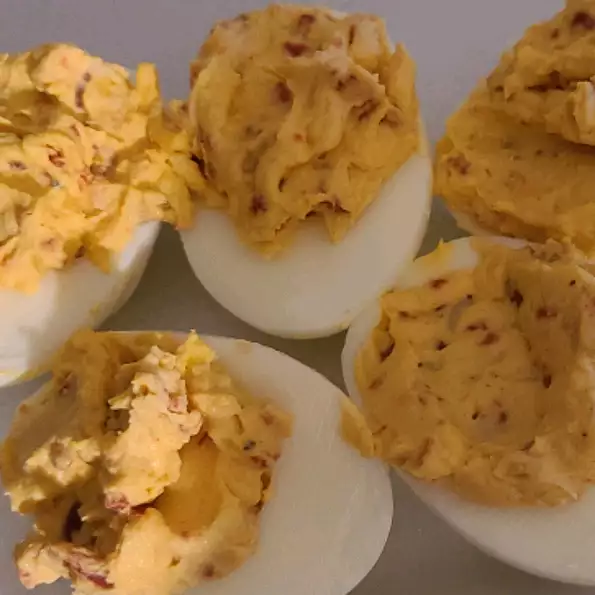

Fully Loaded Deviled Eggs

Delicious hard boiled eggs with whipped filling.
This recipe for deviled eggs is easy to make and perfect for potlucks!
- 12 eggs
- 1 teaspoon vegetable oil
- 1 small onion, chopped
- 1/4 cup sour cream
- 2 tablespoons mayonnaise
- 1 tablespoon ranch dressing, or to taste
- 1 1/2 teaspoons Dijon mustard
- 1/2 teaspoon garlic powder
- 1/2 pinch onion powder
- 1/8 teaspoon lemon pepper seasoning
- 1 tablespoon bacon bits, or to taste
- 1 cup finely shredded sharp Cheddar cheese
- 1/4 teaspoon paprika, or as needed
- Place eggs into a large pot and cover with lightly salted water. Bring to a boil and reduce heat to medium; boil eggs for 10 to 12 minutes.
- Drain boiling water and fill the pot with cold water. Let eggs sit in cold water for 2 minutes, then pour off water and replace with more cold water. Repeat until eggs are thoroughly chilled, 10 to 15 minutes. Peel eggs; set asi
- Heat vegetable oil in a small skillet over medium heat; cook and stir onion until translucent, about 5 minutes. Remove from heat and let cool.
- Slice eggs in half lengthwise and scoop yolks into a bowl; transfer egg white halves to a plate.
- Mash egg yolks with a fork; stir in sour cream, mayonnaise, ranch dressing, Dijon mustard, garlic powder, onion powder, and lemon pepper seasoning until yolk mixture is smooth. Stir in sautéed onions, bacon bits, and Cheddar cheese.
- Generously fill egg halves with filling and sprinkle each deviled egg with paprika. Refrigerate until chilled before serving.